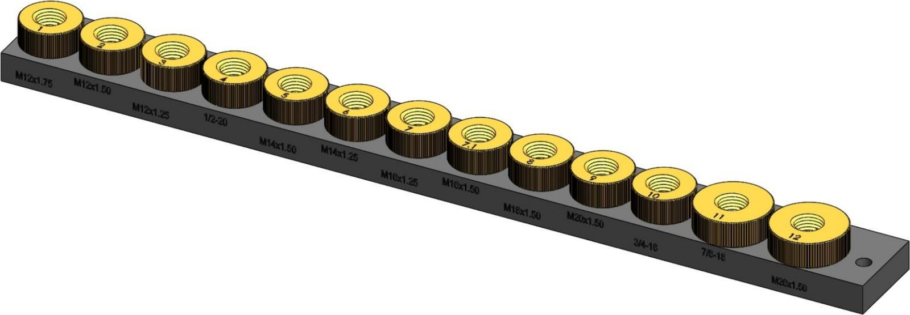
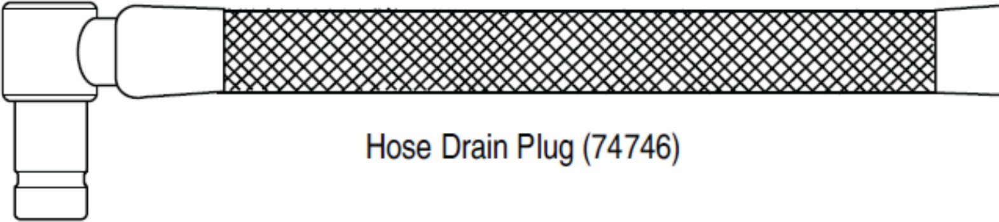
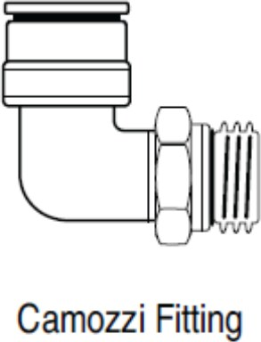

Doc no. MOC-TSB-13-09 // Vol. 13 No. 09 // Mar 28, 2013 // Engine
Slim Line Plug Adapters for Engine Flush Machines
New7486094266
MOC has developed a new kit of slim line plug adapters (Part No. 74860) for use with Engine Flush Machines. This new kit is easier to use and less likely to leak. A 90 degree Camozzi fitting (Part No. 94266) is included with the kit for use with the selected slim line plug; it screw onto the top of the plug. Connect the Camozzi fitting to the Hose Drain Plug (Part No. 74746) before beginning a service.
What's new
This adapter set is now available for purchase.
The individual Slim Line Plugs are also available separately. See below for the part numbers and descriptions.
Contact
For more information, contact the Machine & Equipment Department at 866.244.6621.



Part numbers
| Part No. | Description | Notes |
|---|---|---|
| 74861 | PLUG; SLIM LINE 12MM-1.75MM (#1) | |
| 74862 | PLUG; SLIM LINE 12MM-1.50MM (#2) | |
| 74863 | PLUG; SLIM LINE 12MM-1.25MM (#3) | |
| 74864 | PLUG; SLIM LINE 1/2-20 (#4) | |
| 74865 | PLUG; SLIM LINE 14MM-1.5MM (#5) | |
| 74866 | PLUG; SLIM LINE 14MM-1.25MM (#6) | |
| 74867 | PLUG; SLIM LINE 16MM-1.25MM (#7) | |
| 74868 | PLUG; SLIM LINE 18MM-1.5MM (#8) | |
| 74869 | PLUG; SLIM LINE 20MM-1.5MM (#9) | |
| 74870 | PLUG; SLIM LINE 3/4-16 (#10) | |
| 74871 | PLUG;SLIM LINE 7/8-18 (#11) | |
| 74872 | PLUG; SLIM LINE 26MM-1.5MM (#12) | |
| 74873 | PLUG; SLIM LINE 16MM-1.50 (#7.1) | |
| 74860 | Kit, Slim Line (Camozzi) | |
| 94266 | 90 degree Camozzi fitting | |
| 74746 | Hose Drain Plug |